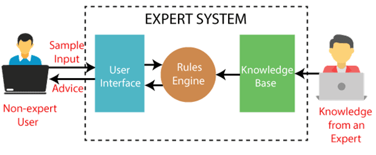

Engineering Cycle Projects 2024-2025
During this year of training in the engineering cycle, I developed two major projects in C language that allowed me to acquire skills in programming, complex system design and project management.
1. Expert System for Investigation Resolution
What I learned and accomplished:
Technical skills acquired
- Design and implementation of a complete expert system with rule base and fact base
- Development of an inference engine with forward and backward chaining
- Implementation of complex linked lists for managing rules and facts
- Advanced use of recursion for rule processing
- Management of dynamic memory allocation for optimal flexibility
- Manipulation of text files with respect to B.N.F. grammar
- Programming in non-canonical mode for fluid user interaction
- Creation of a unit test system for code validation
Implemented features:
- Forward chaining from a fact base and rules
- Backward chaining for hypothesis verification
- Creation, modification, display and saving of fact and rule bases
- Loading bases from files in specified format
- Management of facts according to order 0 and 0+ with logical reasoning (modus ponens, modus tollens)
2. Festival Management Application
What I learned and accomplished:
Technical skills acquired
- Development of a modular C application with interface/implementation separation
- Management of complex structures (artists, concerts) with interactions
- Manipulation of binary files for data persistence
- Implementation of an interactive menu system
- Working with dynamic arrays and memory management
- Data synchronization between different databases
- User input validation and error handling
Implemented features:
- Complete artist management (add, modify, delete, display)
- Concert management with planning by date and time
- Saving and loading data in binary files
- Interaction between artist and concert databases
- Automatic synchronization of modifications
- Intuitive user interface with contextual menus
Technical Concepts Mastered
Complex Linked Lists
Below is the basic structure for chaining Lists:
typedef struct Condition {
int id_fait;
struct Condition *suivant;
} Condition;
typedef struct Regle {
int id;
Condition *premisse;
int conclusion;
struct Regle *suivant;
} Regle;
Thus, it is possible to obtain a tree structure:

This structure constitutes the core of what is called an inference engine. It is essential to the design of an expert system, that is to say a program specialized in a specific domain. Such a system relies on a knowledge base, fed by a human expert, to allow the user to benefit from this knowledge in an adapted and relevant manner according to their specific problem.

Inference Engines and Expert Systems
I acquired an understanding of expert systems and their fundamental components:
1. Fact base → Known information
2. Rule base → Expert knowledge
3. Inference engine → Reasoning engine
4. User interface → Interaction
Forward Chaining
Forward chaining starts from known facts to deduce new conclusions. I implemented an algorithm that:
- Goes through all the rules to find those whose conditions are satisfied
- Adds conclusions to known facts
- Repeats the process until no new conclusion can be deduced
Backward Chaining
Backward chaining starts from a hypothesis and checks if it can be proven. My implementation:
- Takes a hypothesis to verify
- Searches for rules that can prove this hypothesis
- Recursively checks if the conditions of these rules are satisfied
- Returns a boolean result indicating whether the hypothesis is verified
Project Management and Methodology
Beyond technical aspects, these projects allowed me to develop project management skills:
- Creation of test specifications for feature validation
- Planning with Gantt charts
- Task distribution and team coordination
- Unit and integration testing
Summary and Perspectives
These two projects allowed me to acquire skills in C development, complex system design and project management. I appreciated the technical challenge of creating a functional expert system with its inference engines.
Key skills developed
- Advanced mastery of C and its complex concepts
- Design and implementation of modular architectures
- Management of complex data structures (linked lists, trees)
- Development of logical reasoning algorithms
- Agile project management with modern tools